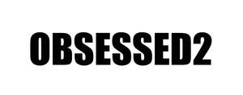

Trade Mark Journal No.2025/027 4 July 2025
UK00004195838 28 April 2025 (9,18,25)

- Class 9
- Sunglasses; glasses; eyewear, spectacles; pince-nez cases; chains for spectacles; contact lenses; containers for contact lenses; correcting lenses (optics); cords for spectacles; eyeglass frames and optical goods; parts and fittings for all the aforesaid goods.
- Class 18
- Leather and imitation leather; animal skins; trunks and suitcases; umbrellas and parasols; walking sticks; whips, harness and saddlery; card cases (wallets); key cases (leather goods); attaché cases; briefcases (leather goods), attache cases; document portfolios [cases]; moleskin (imitation leather), imitation leather; beach umbrellas; whips and saddlery goods; wallets; coin purses not of precious metal; handbags, backpacks, wheeled bags, bags for climbers, bags for campers, travel bags, beach bags, school bags; shopping bags; suitcases and boxes designed to contain toiletries; travel sets (leather goods); toiletry sets and make-up bags (empty); collars and clothing for animals; net bags for shopping; bags and net bags for shopping; bags and small bags (envelopes, pouches) of leather for packaging; parts and fittings for all the aforesaid goods.
- Class 25
- Clothing; footwear; headgear; shirts; clothing of leather or imitation leather; clothing items; women's clothing; men's clothing; clothing for children and babies; hoods (clothing); belts (clothing); gloves (clothing); sashes for wear; scarves; shawls; neckties; hosiery; socks; shoes; bedroom slippers; clothing for sports, skiing and the beach; swaddling clothes; underwear; coats; overalls; short-sleeved shirts; tee-shirts; turtlenecks; slips (underwear); suits; trousers; jackets; pullovers; vests; sweaters; dresses; shirt yokes; shirt fronts; ready-made linings (parts of clothing); stuff jackets; pelerines; gabardines (clothing); waterproof clothing; pockets for clothing; pocket squares; jerseys (clothing); knitwear (clothing); underwear (lingerie); dressing gowns; parts and fittings for all the aforesaid goods.
Dsquared2 Trademarks Limited
Representative: Murgitroyd & Company